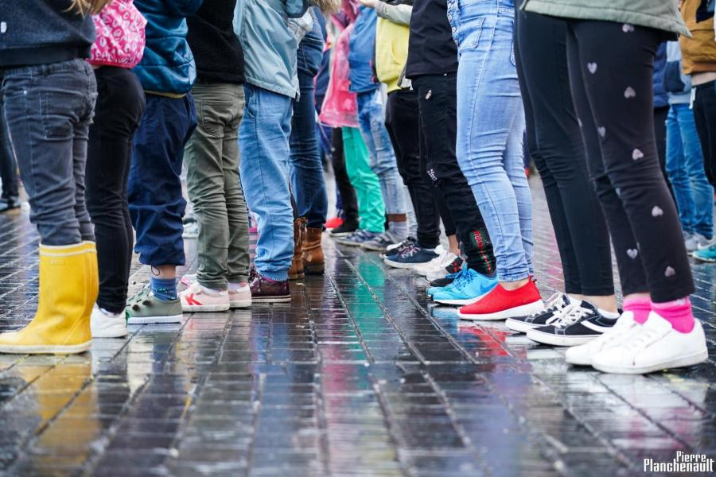

Diffusion
-
Furiosa
«Homme de guerre je te regarde Regarde-moi
Je te dis regarde-moi
[...] Je suis celle qui essaie de
comprendre par la colère
Comme la cascade comprend
la roche par la colère»Furiosa est une création de la Cie Bela&Côme. C'est un seule en scène mêlant danse et théâtre, d'après le texte Stabat Mater Furiosa, de JP Siméon.
Ce poème est le discours d’une femme épuisée de sans cesse répéter le malheur, sans que rien ne bouge jamais. Elle cherche à sortir d’une logique stérile de dénonciation-spectacle qui se nourrit de l’horreur qu’elle dénonce pour offrir une expérience sensible qui puisse faire germer une possibilité de transformation.
Agir par violence n’est qu’une façon de poser son regard sur le monde.
Ce que nous voulons, c’est que ses mots et sa danse entrent dans nos tripes, comme un remord inconciliable. Que son message s’ancre en nous, profondément, pour nous titiller sans relâche dès que l’enjeu de la vie nous confronte. Il nous faut créer cette magie qui entre dans nos têtes, dans nos corps, et y laisse son empreinte particulière.
On s'adresse au conscient, mais aussi aux nerfs, aux os, à la chair. On fait vibrer le corps en face de soi pour y caler sa résonnance perpétuelle, celle qui s'inscrit dans le flux nerveux de l’autre pour ne jamais le laisser tranquille.
Durée : 50 minutes
Interprète : Bela BALSA
Chorégraphie et mise en scène : Côme TANGUY
Aide à la mise en scène : Jérôme BATTEUX et Anthony TRICARD
Texte : Stabat Mater Furiosa, de Jean-Pierre SIMEON
Soutiens : Le Cerisier (Bordeaux) - Le Container (Angresse) - Centre d’Animation du Grand Parc (Bordeaux) - La Faktoria - Choreographic center (Pampelune - Espagne) - Lycée Professionnel Henri Brulle (Libourne) - Ville de Saint-Paul-Lès-DaxLa création est accompagnée par le Département des Landes, dans le cadre du dispositif Culture en Herbe 2020-2021.
Anciennes créations
-
Et Rien Ne Bouge
Pièce chorégraphique pour un public actif.
Les mouvements massifs de contestation sociale en France et dans le monde de ces dernières années nous poussent à nous emparer de cette dynamique pour questionner, à travers l’acte chorégraphique, ce qu’est le corps de la révolte : ses dynamiques, ses moteurs, ses enjeux et ses risques.
En trois étapes, nous proposons au public de questionner sa posture de spectateur, pour l’amener, par le biais de questions fortement ancrées dans les enjeux sociaux actuels, à se questionner personnellement sur les enjeux auxquels il est attaché, le conduisant enfin à se mettre en mouvement en collectivité.Performée à Bordeaux, au marché des Douves, dans le cadre de Dansons sur les Quais et lors du festival Le Bruit des Corps.
Durée : 1 heure + temps convivial d’échange informel à la fin de la pièce.
Interprètes : Bela BALSA / Jérôme BATTEUX / Manon CAPRARO / Jean-François COFFIN / Laure DESPLAN / Alice LADA
Chorégraphie : Côme TANGUY
Aide à l'écriture chorégraphique : Bela BALSA Aide à la création sonore : Mariele BARAZIOL
Textes: Jérôme BATTEUX – Cie des Petites Secousses
Soutiens: Marché des Douves, Dansons sur les Quais, Mairie de Bordeaux -
Entrez dans la danse
Création à la demande du festival CHAHUTS pour l'édition 2018 et 2019 qui prend la forme d'un Flash Mob dansé sur la place St MIchel, à Bordeaux, lors de la soirée d'inauguration.
Edition 2018 - avec adultes usagers de la MDSI et differents partenaires du quartier St Michel.
Edition 2019 - avec les enfants, élèves du CP au CM2 de l'école des Menuts.
Durée : 10 minutes
Chorégraphie : Bela BALSA / Côme TANGUY
Partenariat : Chahuts -
Jocaste
Duo autour du personnage de Jocaste, amante, mère et femme d' Oedipe.
«J’ai aimé Œdipe bébé, Œdipe jeune homme, Œdipe époux et père, amant fougueux, Œdipe imparfait, colérique, orgueilleux, Œdipe penaud et erratique […] J’ai aimé mes cinq enfants, semblables et différents, débordants de vie : Ismène la douce, Antigone l’écorchée, Etéocle l’inquiet, Polynice le solaire, Œdipe le premier et dernier…»
Performée à Bordeaux, dans le cadre de la 8ème édition du festival Soirées du cinéma russe. Performée au marché des Douves, au Performance, dans le cadre de Dansons sur les Quais et lors du festival Le Bruit des Corps.
Durée : 20 minutes
Chorégraphie et interprétation : Bela BALSA / Côme TANGUY
Inspiré de Jocaste Reine, de Nancy HUSTON
Soutien : Marché des Douves, Dansons sur les Quais, Le Performance
-
Mélodie des Corps
Cette création mêle danse contemporaine et chant choral pour offrir une autre approche de la musicalité, qui puisse s’appuyer sur d’autres outils que le son : la vibration, le toucher, la vue, le mouvement.
Création à l’initiative de la Halle des Douves pensée pour un public malentendant. Performée à Bordeaux au sein de la Halle, ce spectacle a réuni un public de 156 personnes.
Avec Marie Chavanel et les élèves Cantabile et Cham du Conservatoire de Bordeaux.Durée : 90 minutes
Interprètes : Bela BALSA / Charlotte MASSE / Manon CAPRARO / Mélissa MARTINEZ
Chorégraphie : Bela BALSA / Côme TANGUY
Création sonore : Mariele BARAZIOL
Réalisation graphique : Clara LANG
Partenariats : Marché des Douves et Conservatoire de Bordeaux
-
L'Antigone de Clios
«Il n'a pas l'air méchant, mais il y a pourtant dans son regard quelque chose de sauvage et d'amer qui l'effraie et la subjugue. [...] Qu'il est beau avec ce front haut sur lequel retombe ses cheveux noirs et bouclés, sa bouche éclatante sous le jeu amer du sourire.» Antigone, H. Bauchau
Duo inspiré des personnages d'Antigone et de Clios, dans la version romancée d'Henri Bauchau. La rencontre de ces deux personnages, dans leur errance à travers la Grèce, les transforme l'un l'autre. Clios est un homme violent et impulsif qui trouvera par Antigone sa sérénité. Elle, tout en dévotion et abnégation, incarne pourtant avec puissance le combat pour autrui. Ces deux personnages, se retranscrivent ici pour construire des individus intemporels et présents, en accord avec la fonction même du mythe grec qui est de renvoyer à notre propre condition.
Le plateau est un espace noir et sans limites où la lumière travaille à effacer les frontières matérielles et créer les espaces vides. Le regard n'a comme point d'accroche que ces deux êtres qui y tracent leur chemin, deux personnages livrés à leur sort.Performée à Toulouse, Sens et Bordeaux, dans le cadre du Festival Ravensare, du Concours des Jeunes Chorégraphes Les Synodales 2016 – Lauréat Prix des Synodales et de Dansons sur les Quais.
Durée : 20 minutes
Chorégraphie et interprétation : Bela BALSA / Côme TANGUY
Inspiré de Oedipe sur la route et Antigone, de Henri Bauchau
Soutien : La Boite à Jouer, Le Performance, Dansons sur les Quais, Les Synodales,Festival Ravensare
Crédits : Steve Laurens